MHLA：用 token 级多头恢复线性注意力的表达力
这篇 MHLA: Restoring Expressivity of Linear Attention via Token-Level Multi-Head 由北京大学与 NVIDIA 合作完成，第一作者 Kewei Zhang 的主机构为北京大学。论文没有再给线性注意力叠加卷积或周期性全注意力，而是把“多头”从常见的通道维搬到 token / 空间维：先得到多个局部 KV 摘要，再为每个 query block 学习一组混合权重。作者同时公开了项目页、代码与模型资源。这篇论文最值得读的不是又一个高效注意力算子，而是它把线性注意力的退化解释成可测量的“全局上下文坍缩”，并用秩、熵、端到端收敛和多领域实验把理论判断串成闭环。
1. 背景和问题
1.1 长序列注意力的效率约束
标准 Transformer 的优势来自 self-attention：每个 query 都能与全部 key 计算相似度，再据此对 value 做动态加权。设输入为 $X\in\mathbb{R}^{N\times d}$，经过可学习投影得到
其中 $N$ 是 token 数，$d$ 是隐状态维度。对第 $i$ 个 token，统一的注意力写法是
softmax attention 选择
它的关键并不只是“全局看见”，而是每个 $Q_i$ 都得到一条独立的长度为 $N$ 的权重分布。换一个 query，相关 token 的排序和权重就可能完全改变。这种 query-conditioned selectivity 是全注意力表达力的来源；代价则是显式或隐式处理 $N\times N$ 的关系矩阵，时间复杂度约为 $O(N^2d)$、注意力矩阵显存为 $O(N^2)$。当视频 latent 序列达到数万 token，或图像分辨率继续上升时，平方项会迅速成为不可接受的瓶颈。FlashAttention 能显著降低 IO 与中间显存，却没有改变全注意力的二次算术量。
线性注意力通过正特征映射 $\phi(\cdot)$ 近似相似度：
利用矩阵乘法结合律，可以先对所有 key-value 做汇总：
并定义全局 KV 摘要与归一化状态
这样，每个 query 不再逐一访问 $N$0 个 key，而只与固定大小的 $N$1 和 $N$2 相乘，序列维复杂度从平方降为线性。问题也恰恰藏在这个结合律里：$N$3 个 token 的全部内容被压进同一个 $N$4 矩阵，且所有 query 共用它。计算省下来了，但原本对每个 query 独立构造的 token 权重分布也被折叠了。
1.2 线性注意力的既有修补路线
此前工作的常见做法，是在线性注意力外部补回它丢失的结构。视觉线性注意力会叠加 depthwise convolution 或条件位置编码，以卷积的局部归纳偏置补偿全局摘要对邻域细节的不敏感；另一些方法加入 gating，让模型控制哪些历史状态应该写入或遗忘；还有混合架构保留少量 softmax attention 层，在重要位置重新注入完整 token 交互。这些方法往往有效，却带来两个疑问。
第一，性能究竟来自线性注意力本体，还是来自额外卷积、门控和全注意力？如果必须不断加旁路模块，线性注意力“同样表达力但更便宜”的叙事就站不住脚。第二，附加模块的成本会随分辨率、层数或模型规模增长，而且并不必然解决共享全局摘要的根因。论文在 DiT 的实验中甚至观察到：CPE 对小模型有帮助，但到 DiT-XL/2 反而让 FID 从纯 MHLA 的 20.32 退化到 22.79；只有再叠加 output gating 才到 19.17。这说明局部卷积不是一个随规模稳定增益的通用答案。
MHLA 的出发点因此更“底层”：先问线性注意力究竟丢了什么，再直接改变摘要的组织方式。作者把失败归因于 token 维没有分组——传统 multi-head attention 通常沿通道维拆 head，而标准线性注意力依然把所有 token 汇成一个全局状态。MHLA 则沿 token / 空间维切出多个 block，并把每个 block 视为一个“token-level head”。它不恢复 $N$5 个成对相似度，而是在一个全局摘要与完整注意力矩阵之间，插入 $N$6 个局部摘要这一中间层级。
1.3 全局 KV 摘要为什么会成为瓶颈
标准线性注意力的固定状态可以写为 $N$7。当 $N$8 很小时，$N$9 可能足以编码主要统计；当 $d$0，越来越多内容竞争同一有限容量。作者把这种现象称为 global context collapse：随着序列增长，固定大小摘要无法保留足够多的 token 级差异，导致不同 query 取得相似、趋于平均的上下文。
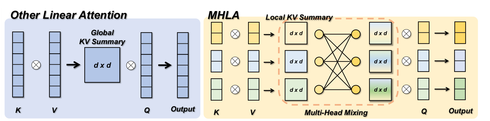
Figure 2 左侧是普通线性注意力：$d$1 与 $d$2 先合成一个 $d$3 的全局 KV Summary，所有 $d$4 都只访问这一个对象。图右侧的 MHLA 则保留多个 Local KV Summary，再用 Multi-Head Mixing 为不同 query block 组合出不同的摘要。这里的核心区别不是“局部注意力”：每个 query block 仍可混合所有 block 的摘要，因而仍然具备全局感受野；变化的是全局信息不再提前、无条件地压成一个状态。可以把它理解为粗粒度路由：先在 block 级决定哪些区域重要，再在入选区域内部由核内积区分 token。它比完整 $d$5 路由粗，但比一个全局桶精细得多。
这个设计还揭示“query-conditioned”的精确边界。MHLA 的混合权重以 query 所属 block 为条件，而不是由每个 query 内容在线计算一个独立路由。因此，同一 block 内的 query 共用 block 级系数，只在块内核相似度上不同。论文用很小的额外状态换回了一部分选择性，但没有完全复原 softmax attention 的逐 query、逐 token 自适应。这既是效率来源，也是后文需要警惕的表达力上限。
1.4 global context collapse 的两个可量化证据
作者没有把“表达力不足”停留在直觉层面，而是使用秩与熵做诊断。令 $d$6、$d$7，普通线性注意力对应的未归一化权重矩阵为
由矩阵秩不等式直接得到
无论序列长度 $d$8 增加到多少，注意力图可表示的独立模式数都被特征维 $d$9 卡住。当 $i$0 时，相对秩 $i$1 越来越低。这个结论针对的是核化线性注意力形成的分解结构，而不是说一个深层网络的最终隐藏状态整体秩永远不超过 $i$2；它描述的是单层注意力权重图的结构瓶颈。
第二个指标是每行注意力分布的熵：
在相同 token 数下，熵低意味着权重集中到少数 token，熵高意味着更接近均匀分布。softmax 的指数核可以放大 query-key 相似度差异；共享摘要的线性注意力则让每个 token 的边际贡献随 $i$3 增加而变小，容易失去尖锐选择性。熵并非越低越好——过度尖锐也可能遗漏上下文——但在作者关注的失败场景里，高熵与视觉上“什么都看一点”同时出现，是坍缩的证据。
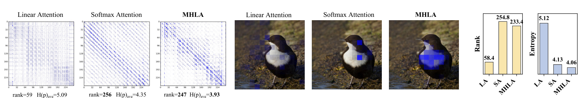
Figure 3 的 DeiT-T 统计很有代表性：Linear Attention 的平均秩约 58.4，Softmax Attention 为 254.8，MHLA 达到 233.4；平均熵分别为 5.12、4.13 和 4.06。单个样例也显示秩从 59 提升到 247，熵从 5.09 降到 3.93。MHLA 并非只“接近”softmax，它在该统计上甚至更尖锐。需要谨慎的是，这些数值来自特定模型、数据和注意力分数定义，不能直接推出所有任务上更低熵都更优；但它至少验证了 MHLA 确实改变了论文所指认的中间机制，而不是只靠参数量或训练技巧提高末端指标。进一步看，秩与熵在同一方向改善很关键：若只有熵下降，可能只是分布过度尖锐；若只有秩提高，也可能只是引入无用噪声。两者同时接近 softmax，才较完整地说明注意力既变得多样，又能集中到相关位置。
2. 方法
2.1 沿 token 维切块：从一个全局 KV 摘要到 $i$4 个局部摘要
MHLA 保留标准 QKV 投影，令 $i$5、$i$6、$i$7，并记 $i$8、$i$9。与沿 feature dimension 把 $Q_i$0 拆成多个 channel head 不同，它将 $Q_i$1 个 token 分成 $Q_i$2 个互不重叠的 block，第 $Q_i$3 个 block 有 $Q_i$4 个 token。图像上的 block 沿 $Q_i$5 网格划分，视频则沿时空三维网格划分，而不是拍平后随意截断；后续局部性初始化因此仍有几何意义。分块约束为
符号解释：$Q_i$6 是 token-level head 或 block 数，$Q_i$7 是第 $Q_i$8 块的 token 数，$Q_i$9 是总序列长度。对每个 block，MHLA 分别计算局部 KV 摘要与归一化状态：
符号解释：$N$0 是第 $N$1 个 key 经正特征映射后的表示，$N$2 是对应 value，$N$3 将 block $N$4 的键值关系压进 $N$5 状态，$N$6 保存归一化所需的 key 和。输入是 $N$7 个局部 token，输出是一个矩阵状态和一个向量状态；所有 block 总成本仍随 $N$8 线性增长。状态量从普通线性注意力的 $N$9 增为 $N\times N$0，换来的是信息不再提前丢掉“来自哪个区域”的身份。
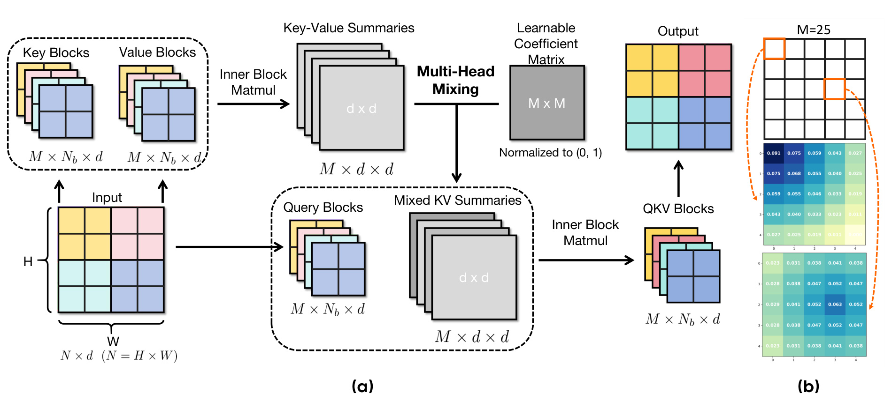
Figure 4(a) 展示了完整张量流：$N\times N$1 输入按空间网格成为 $N\times N$2 的 Key/Value Blocks；第一次 Inner Block Matmul 得到 $N\times N$3 的 Key-Value Summaries。Query 保持 $N\times N$4 的分块形状。中间的 $N\times N$5 Learnable Coefficient Matrix 做 Multi-Head Mixing，产生同形状的 Mixed KV Summaries；第二次块内矩阵乘法还原出 $N\times N$6 输出。整个过程只依赖规则 GEMM。Figure 4(b) 展示 $N\times N$7 时第 1 与第 14 个 query block 的初始化权重：前者偏向左上角，后者偏向中部邻域，与二维距离一致。这里的“head”不是传统上各自拥有低维 QKV 投影的 channel head，而是共享通道表示、沿序列轴分组形成多个可寻址状态；两种 head 可以叠加使用。
2.2 Multi-Head Mixing：从局部摘要恢复 query 条件性
仅有 $N\times N$8 个局部摘要会退化为局部注意力。MHLA 引入可学习系数矩阵 $N\times N$9，其中 $O(N^2d)$0 表示 query block $O(N^2d)$1 对 key-value block $O(N^2d)$2 的偏好；第 $O(N^2d)$3 行把所有局部摘要重组为该 query block 专属的全局状态：
符号解释：$O(N^2d)$4 是 block 级混合权重，$O(N^2d)$5 与 $O(N^2d)$6 分别是 query block $O(N^2d)$7 专属的混合 KV 摘要和归一化向量。对 block $O(N^2d)$8 内任一 query 特征 $O(N^2d)$9，输出为
符号解释：$O(N^2)$0 是当前 query 的输出，分子汇总按 $O(N^2)$1 缩放后的 value 内容，分母完成核注意力归一化。这里有两级条件性：$O(N^2)$2 先按 query 位置块选择 KV block，$O(N^2)$3 再按 query 内容区分块内 token。前者在同一 query block 内共享，后者逐 query 变化；因此 MHLA 补回的是 block-conditioned selectivity，而不是完整 softmax 的逐 query 任意路由。$O(N^2)$4 个 $O(N^2)$5 摘要和 $O(N^2)$6 的组合都可写成批量 GEMM，比动态 top-$O(N^2)$7 或不规则稀疏索引更易利用 GPU。论文在语言建模和超长视频中允许省略分母以改善稳定性，说明归一化开关必须按核函数、序列长度与任务单独复现，不能把主公式机械套到所有实验。
2.3 局部性偏置初始化与 token 级两段式重加权
随机初始化 $O(N^2)$8 会让模型同时学习空间邻域与长程交互。作者用 block 间欧氏距离给出 locality-biased initialization：
符号解释：$O(N^2)$9 是二维或三维网格上 block $\phi(\cdot)$0 的距离，$\phi(\cdot)$1 是归一化初始系数；近邻权重大、最远位置接近零。训练中 $\phi(\cdot)$2 仍端到端更新，系数保持非负并在每次更新后 clip 到 $\phi(\cdot)$3，避免正负摘要抵消或数值发散。它是可学习的静态位置路由，而非由当前样本动态生成的 router；对固定视觉网格很自然，但对动态长度、对象位移或文本语义结构，系数如何共享与插值是额外设计问题。消融中仅 Learnable 为 75.4，仅冻结 LB-init 为 75.1，二者结合为 75.8，说明先验改善起点、学习负责偏离固定局部模式。 把局部摘要按 token 展开可看清真正的权重路径。记 token $\phi(\cdot)$4 所属 block 为 $\phi(\cdot)$5，则
符号解释：$\phi(\cdot)$6 把 token 映射到其 block，$\phi(\cdot)$7 是 query block $\phi(\cdot)$8 对该 token 所在区域的粗粒度权重，$\phi(\cdot)$9 是块内逐 token 核相似度。有效权重因此是“块选择 × 块内重加权”的乘积。视频 query 可先放大人物跨帧轨迹所在时空块，再在块内定位具体像素；语言 query chunk 可先选历史 chunk，再读取其压缩状态。代价是同一 block 内所有 token 共享粗粒度系数：若一个 block 包含冲突语义，只能靠核内积继续区分。block 越小路由越细、$N$00 越大；block 越大越便宜、也越接近共享摘要，这就是方法最核心的容量—成本旋钮。
2.4 秩、稀疏性与复杂度
将 $N$01 按 block 写为 $N$02，其中 $N$03。对 query block $N$04，混合后的 key 序列为 $N$05，对应注意力子矩阵 $N$06。由矩阵秩不等式有
符号解释：$N$07 是第 $N$08 个 query block 对全序列的注意力子矩阵，$N$09 是所有子矩阵纵向拼接后的完整注意力图。若每块乘积达到满行秩且块间行空间独立，上界可达；现实中即使不完全独立，多组混合也通常扩大行空间。上界提高不等于训练后必然高秩：若数据重复、$N$10 各行趋同或核映射退化，实际秩仍会低。Figure 3 的实测 233.4 对 58.4 是经验支撑，而不是对所有配置的保证。 稀疏性方面，$N$11 先把较大质量集中到少数相关 block，再由块内核相似度形成 token 差异，因而注意力熵下降；这是表示上的软选择性，并不会像 top-$N$12 稀疏注意力那样跳过未选块的摘要计算。复杂度由局部摘要、混合与输出三部分构成：
符号解释：$N$13，首尾两项分别是构造局部摘要和用 query 读取混合摘要，中间项是 $N$14 系数对 $N$15 个 $N$16 状态的混合。选择 $N$17 时，$N$18 为主项，序列维保持线性；显存状态为 $N$19，介于普通线性注意力的 $N$20 与全注意力的 $N$21 之间。所谓“相同时间复杂度”指渐近阶相同，不是绝对零额外开销；$N$22 过大时混合项会主导，Table 7b 的吞吐下降正好验证这一点。
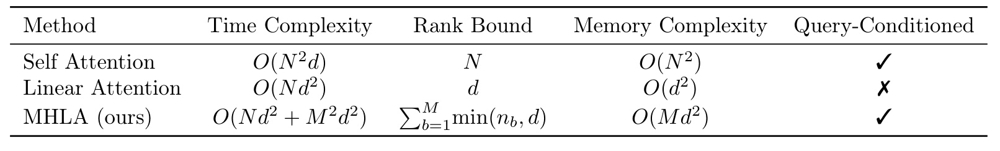
这张理论对照表把三种机制放到同一坐标系：Self Attention 是 $N$23 时间、秩上界 $N$24、$N$25 显存并保留 query 条件性；Linear Attention 是 $N$26、秩上界 $N$27、$N$28 显存，却丢失 query 条件性；MHLA 是 $N$29、秩上界 $N$30、$N$31 显存并恢复条件选择。表中最后一列的勾选应理解为 block-conditioned mixing 与 token kernel 的组合，而不是和 softmax 完全等价。它揭示论文真正的新轴：状态槽数从 1 增加到 $N$32，用可控的状态与混合成本换取近似随 $N$33 增长的注意力行空间；当任务对长程细节不敏感时可取小 $N$34，当视频或高分辨率图像发生明显全局坍缩时再提高 $N$35。
2.5 自回归 chunkwise 训练与增量推理
因果语言建模不能让第 $N$36 个 chunk 访问未来 block。MHLA 与 chunkwise linear attention 的分块同构：训练时为每个 chunk 计算 $N$37，第 $N$38 个 query chunk 只混合前缀摘要：
符号解释：求和范围 $N$39 实现 block 级因果掩码，$N$40 是已经完成的历史 chunk 状态，$N$41 是当前 chunk 对历史状态的混合系数；$N$42 可采用相同前缀混合。块内再用标准 chunkwise 策略处理逐 token 因果关系。混合每个 block 只做一次、由其中所有 query 复用，因此训练可并行构造摘要与前缀组合；增量推理则在完成新 block 时追加局部状态并更新混合结果，仍兼容 streaming/stateful execution。
需要区分时间线性与状态恒定：普通 recurrent linear attention 只维护一个 $N$43 状态，而 MHLA 若让历史 block 数持续增长，就要保存越来越多 $N$44。论文主实验的训练上下文为 2048、$N$45，足以证明可训练性，却没有完全回答百万 token 持续流式推理如何管理状态。工程上需要固定 $N$46、合并旧块、滑窗淘汰或分层压缩；动态长度还要求定义 $N$47 的外推方式。换言之，MHLA 已解决“一个摘要容量不足”的问题，但把长期记忆管理变成了显式系统选择，这也是它相比黑盒单状态更容易继续扩展的地方。
3. 实验结果
3.1 图像分类
作者首先把 MHLA 接入 DeiT 和 VLT，在 ImageNet-1K 上训练。DeiT 系列训练 300 epoch，batch size 1024，峰值学习率 $N$48；224 输入会 pad 到 256，便于规则切分，默认 $N$49。这一设置不是严格零改动替换，因为 padding 改变了 token 网格，但所有对照在同一训练口径下报告。
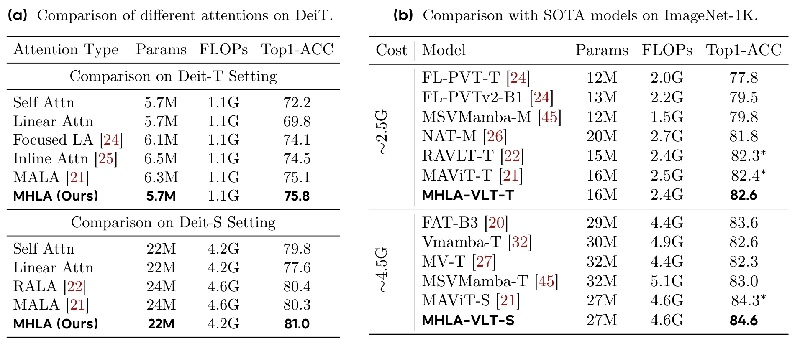
Table 2(a) 中，DeiT-T 的 Self Attention、Linear Attention 和 MHLA 参数量都为 5.7M、FLOPs 都为 1.1G，Top-1 分别是 72.2、69.8 和 75.8。MHLA 比 vanilla linear attention 高 6.0 个百分点，比 self-attention 高 3.6 个百分点；摘要里的“3.6% improvement on ImageNet”来自这里，更准确说是 3.6 个 Top-1 百分点。DeiT-S 上三者分别为 79.8、77.6、81.0，MHLA 以 22M / 4.2G 与基础模型同成本，超过带额外参数和 FLOPs 的 RALA、MALA。Table 2(b) 的 VLT 体系中，MHLA-VLT-T 达 82.6，MHLA-VLT-S 达 84.6，分别略高于同档对照。
这组结果支持两个判断：第一，性能并非靠参数扩张，DeiT 对照中参数量和 FLOPs 对齐；第二，token 维摘要组织对判别任务也有收益，不只是长序列生成。不过，ImageNet 输入经 patchify 后 token 数远小于 31,500 的视频实验，因此这里更像证明 MHLA 的归纳偏置有效，而不是证明它解决了极长上下文。表中带星号的 RAVLT / MAViT 是作者在相同设置下复现，仍需关注官方实现与复现实现的差异。
3.2 类别条件图像生成
C2I 实验从头训练 DiT 与 DiG，ImageNet-1K、400k steps、batch size 256、学习率 $N$50，分辨率覆盖 256 与 512，$N$51。评价核心是 FID，越低越好。作者既比较原始 self-attention / GLA，也测试纯 MHLA、带 CPE、带 CPE+Gating 的变体。
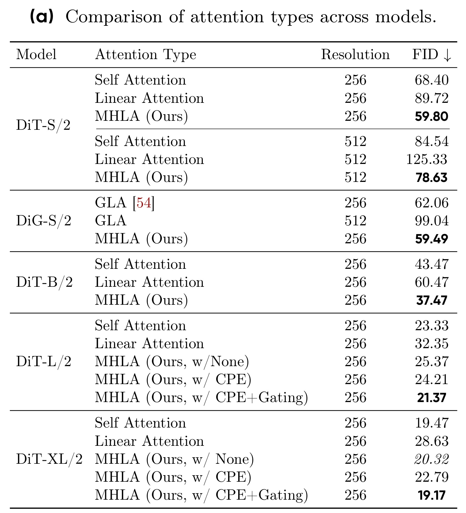
Table 3(a) 显示，DiT-S/2 在 256 分辨率下 Self Attention 为 68.40、Linear Attention 为 89.72、MHLA 为 59.80；相对 self-attention 的 FID 降幅约 $N$52，对应摘要中的“12.6%”。到 512 分辨率，三者为 84.54、125.33、78.63，vanilla LA 的退化随序列变长急剧扩大，而 MHLA 仍优于 self-attention。DiT-B/2 上，MHLA 37.47，也好于 self-attention 43.47 与 LA 60.47。这些对照直接支持 global context collapse 会在更长视觉序列上放大的主张。
大模型结果更复杂。DiT-L/2 的纯 MHLA FID 25.37，仍差于 self-attention 的 23.33；加 CPE 为 24.21，加 CPE+Gating 才到 21.37。DiT-XL/2 的纯 MHLA 20.32 接近 self-attention 19.47，加入 CPE 反而退化到 22.79，再加 gating 到 19.17。因而“MHLA 无需额外模块即可全面超越 self-attention”并不适用于表中每个规模：小型 DiT 上纯 MHLA 强势，大型模型上大致匹配，而最佳数字仍可能依赖额外模块。论文的真正强点是纯 MHLA 已消除 vanilla LA 的大部分落差，而不是所有 setting 都无条件第一。
作者还测试从预训练 DiT-XL/2 checkpoint 快速适配，而非从头训练。
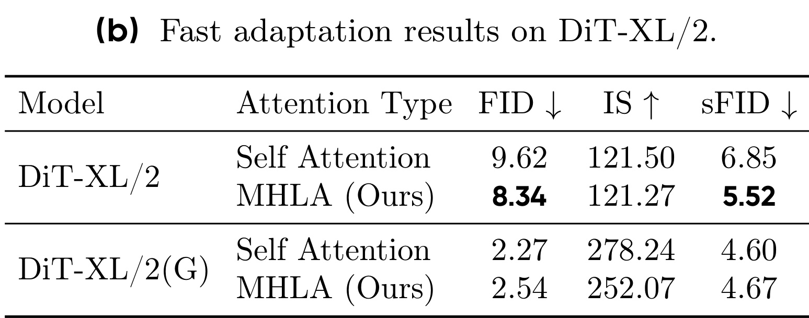
无 classifier-free guidance 时，MHLA 的 FID 8.34 优于 self-attention 9.62，sFID 5.52 优于 6.85，但 IS 121.27 与 121.50 接近。加入 CFG 后，self-attention FID 2.27、IS 278.24、sFID 4.60；MHLA 为 2.54、252.07、4.67，三个指标都略逊。这是重要的反向证据：MHLA 可以迁移已有权重，并在无 guidance 下改善分布质量，但它与 CFG 的交互尚未优化到完全等价。部署者不能只取“快速适配”结论，还应在自己的 guidance scale 上重新扫参。尤其 CFG 会组合条件与无条件预测，MHLA 的 block mixing 若在两条分支上形成不同尺度，原模型最优 guidance 超参数可能不再适用；应同时检查 FID、IS、sFID，而不是用单指标宣布迁移成功。
3.3 文本到图像与 SANA 快速适配
T2I 实验从官方 SANA-0.6B checkpoint 微调 40k steps，batch size 256，仅将原线性注意力替换为 MHLA。与从头训练相比，这更接近已有生成模型的升级路径。
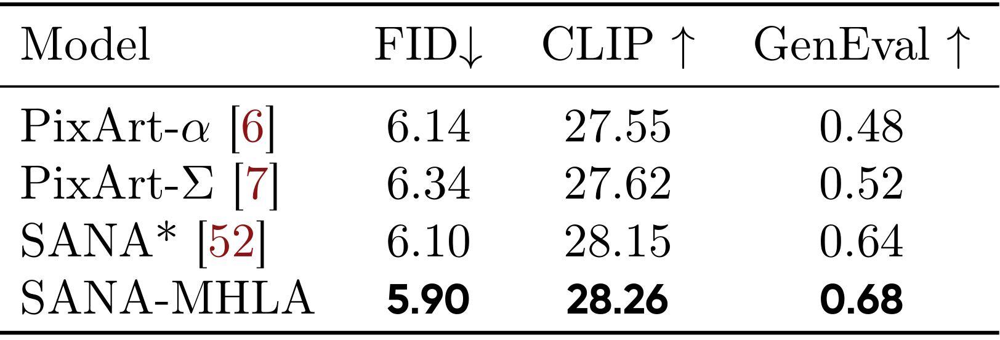
Table 4 中，SANA 基线的 FID、CLIP、GenEval 为 6.10、28.15、0.64；SANA-MHLA 为 5.90、28.26、0.68，三项同向改善，并超过表中的 PixArt-α / PixArt-Σ。幅度不大，但意义在于替换注意力后没有破坏 0.6B 预训练模型，且 40k steps 内完成适配。作者报告前 2k steps 就追上原 checkpoint 的训练 loss，之后收敛到更低值。由于论文没有在该表中给出推理延迟、显存和相同硬件吞吐，T2I 部分更充分地证明质量与可适配性，效率主张则主要由 DiT 吞吐与视频时延支撑。
这一实验也说明 MHLA 的系数矩阵不是只能从零学会。局部性偏置提供了合理初值，原模型的 QKV 与其余网络参数仍能被复用；新加入的 block mixing 在较短微调中接管路由。但如果输入宽高比、分辨率或 latent 网格变化，固定 $N$53 系数矩阵如何插值会影响泛化。项目代码中的分辨率处理、block reshape 与 checkpoint 转换脚本，应该是复现优先核查项。
3.4 超长序列视频生成
视频实验是论文最有说服力的压力测试。作者以预训练 Wan2.1-1.3B 为基座，将 FlashAttention 全部替换为 MHLA 或 vanilla LA；训练 81 帧、480×800 视频，对应序列长度 31,500，MHLA 使用 $N$54。另有一个 hybrid 版本只替换三分之二层。评价使用 VBench 的 Quality、Semantic、Total，以及端到端 latency。
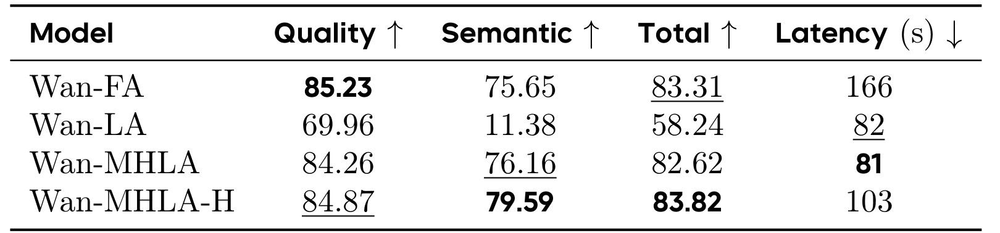
Table 5 中，原始 Wan-FA 的 Total 为 83.31、延迟 166 秒；Wan-LA 延迟降到 82 秒，却把 Total 打到 58.24，尤其 Semantic 从 75.65 崩到 11.38。Wan-MHLA 延迟 81 秒，与 LA 几乎相同，Quality 84.26、Semantic 76.16、Total 82.62，基本恢复原模型质量，并获得约 $N$55 加速。摘要所称“视频提升 41%”对应 Total 从 58.24 到 82.62 的相对增幅约 41.9%，而不是相对原 FlashAttention 提升。Hybrid 的 Total 83.82 甚至略高于原模型，延迟 103 秒，形成约 $N$56 加速的保守折中。
这张表清楚地区分“快”与“可用”：vanilla LA 在时间上成功、质量上失败；MHLA 以几乎同样时间恢复质量。也要注意 latency 的硬件、batch、采样步数与 kernel 配置必须一致才可迁移，表中 81 秒不是普遍服务延迟。更重要的是，Hybrid 表明并非所有层都必须线性化；在生产模型中保留部分 full attention，可能比追求纯架构更稳妥。
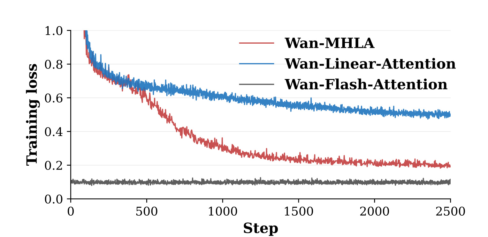
Figure 6 提供端到端优化证据。蓝色 Wan-Linear-Attention 曲线在初期下降后长期停在约 0.5，说明不是“再训练久一点”就能轻易追平；红色 Wan-MHLA 则持续降到约 0.2，快速接近黑色 Wan-Flash-Attention 的低损失轨迹。曲线把中间层 rank / entropy 分析与最终 VBench 崩塌连起来：共享全局状态在 31,500 token 下不仅降低一点指标，而是让优化进入明显平台。MHLA 没有完全追到 FlashAttention 的训练 loss，却在 VBench 上几乎恢复质量，提示训练损失差异与感知指标并非线性对应。还应注意三条曲线的初始状态并不对称：FlashAttention 来自预训练模型，另两者经历结构替换后的适配，所以图更适合比较“能否追近原轨迹”，不能被解读为三种架构从头训练的公平收敛速度排名。
3.5 自回归语言建模与长上下文
语言实验按 GLA 配置从头训练约 340M 模型，数据为 10B FineWeb-Edu tokens，训练 batch 为 0.25M tokens，最大学习率 $N$57，weight decay 0.01，gradient clipping 1.0；训练上下文 2048，MHLA 取 $N$58。对照包含 GLA、Transformer++、Mamba、Mamba2 与 Gated DeltaNet。
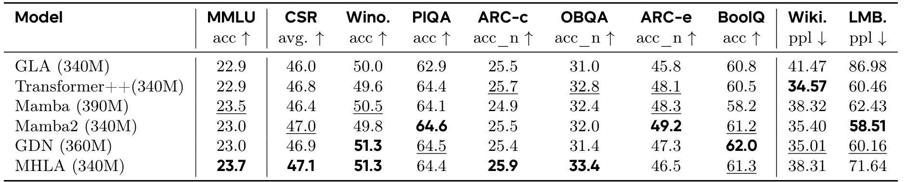
Table 6 中，MHLA 的 MMLU 23.7 为最高，常识推理 CSR 平均 47.1 也最高；子项上 WinoGrande 51.3 与 GDN 并列最佳，OBQA 33.4 最佳，ARC-c 25.9 最佳。摘要所称“NLP 提升 6.3%”并不是表中所有指标统一提升，而应理解为作者选定聚合口径的相对增益。反向看，WikiText perplexity 38.31、LAMBADA perplexity 71.64，明显落后 Transformer++ 的 34.57 / 60.46，也落后部分 recurrent baseline。换言之，MHLA 在零样本任务准确率上强，但 next-token likelihood 并非全面最优。这可能来自归一化选择、训练预算、模型配置或 block 路由的差异，论文没有把原因完全拆开。
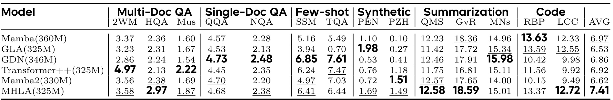
LongBench 平均分上，MHLA 为 7.41，高于 Transformer++ 6.92、Mamba 6.97、GDN 6.86、GLA 6.53 和 Mamba2 6.62。优势主要来自 Multi-Doc QA、Summarization 与 Code：例如第二个 Multi-Doc 子项 2.97 为表内最高，Summarization 中 18.59 领先，Code 两项 13.37 / 12.72 也较强。Synthetic、Few-shot 和部分 Single-Doc QA 并非全部最佳，因此平均分提升依赖任务组合。还应看到模型只在 2048 context 上训练，而 LongBench 往往更长；结果说明 chunkwise MHLA 有一定外推能力，却不足以证明百万 token 记忆或持续流式状态管理。
语言结果的价值在跨域一致性：同一个“多个局部状态 + block mixing”思想，从二维图像、三维视频延伸到一维因果序列，且不需要换成另一个 SSM 架构。不过，文本 token 没有稳定二维几何，局部性初始化的语义与视觉不同；位置绑定的静态系数是否能适应文档结构变化，是值得进一步研究的点。
3.6 消融：初始化、可学习性与 head 数
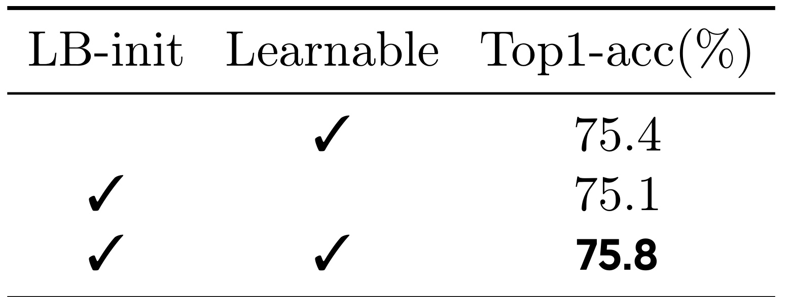
Table 7(a) 说明两个设计都有效。只有 Learnable、无 LB-init 时 Top-1 为 75.4；只有 LB-init、系数冻结时为 75.1；同时使用为 75.8。可学习性单独比固定局部先验高 0.3，说明数据驱动的非局部连接确实重要；二者结合再高 0.4，说明合理初始化改善优化。缺少的是随机初始化的多次运行方差，以及不同初始化在收敛速度上的完整曲线，因此“更稳定、更快”目前主要由最终准确率和作者描述支持。三组结果相差仅 0.3-0.7 个百分点，在没有方差时不宜把差值视为统计显著；更可靠的结论是两项设计没有互相冲突，组合配置取得表内最好点。 对复现而言，最有价值的不是记住 75.8 这个单点，而是把固定局部先验、系数可学习性和二者组合列为三项独立开关，确认收益是否在目标分辨率与数据规模下仍保持同方向。
$N$59 的 FID 与吞吐消融" src="../assets/images/mhla-multi-head-linear-attention/14.jpg" />
Table 7(b) 在 DiT-S/2、512px、$N$60 上测试 $N$61。$N$62 时 FID 79.56、吞吐 435；$N$63 时 FID 最优 78.63、吞吐仍是 435；$N$64 时 FID 回到 79.50、吞吐降到 408。理论约束 $N$65，所以 $N$66 让 $N$67 混合项不再可忽略，实测吞吐确实下降。更细的 block 也没有持续提高 FID，说明增加状态数会遇到统计与优化收益递减。
这个消融给出实用选型规则：先在 $N$68 范围内搜索，不要默认 block 越小越好；同时报告 $N$69、$N$70、block 形状和吞吐，不能只写渐近复杂度。对于二维或三维输入，还应比较不同 block 拓扑：相同 $N$71 下，长条块、方块和时空分解块可能有不同的局部性与内存访问效率。论文主要扫了 head 数，没有系统扫 block 几何、动态分辨率、系数共享方式和层间不同 $N$72，这些是复现后最值得补的消融。
4. 总结
4.1 我的判断
MHLA 最重要的贡献，是把线性注意力的“一个固定全局状态”改成“少量可分别访问的局部状态”，并证明这条中间路线能同时改善注意力矩阵秩、降低熵、恢复超长视频训练，以及在图像、文本、视频上维持线性序列复杂度。它比依靠卷积补丁的方案更接近注意力本体，也比完整 softmax 更适合数万 token。尤其 Wan2.1 的结果很强：与 vanilla LA 同等时延，却把 VBench Total 从 58.24 拉回 82.62，接近 FlashAttention 的 83.31，并从 166 秒降到 81 秒。
但“恢复表达力”应读成显著恢复，而非数学等价。$N$73 以 query block 位置为条件，同一 block 内共享粗粒度路由；状态和混合开销随 $N$74 增长；秩上界可达还依赖块间行空间独立；语言困惑度与 CFG 图像生成也有落后项。它提供了一条有吸引力的容量—效率曲线，而不是在所有维度严格支配 full attention。
4.2 工程启发与复现建议
复现时建议按四层验证。第一，先做算子等价与形状检查：确认空间/时空 block 划分、$N$75、$N$76、$N$77 的轴顺序，验证 $N$78 时退化到普通线性注意力。第二，分别核验带分母与省略分母版本的数值稳定性，记录激活范围、梯度范数和混合系数是否在 clip 边界堆积。第三，在固定参数量和训练 recipe 下复现 rank / entropy，而不是只看终点指标；若中间机制没变化，性能提升可能来自配置差异。第四，再做系统 profiling，至少同时报告吞吐、峰值显存、端到端 latency、$N$79、$N$80、dtype、硬件和 kernel。
部署可优先选择 hybrid：在超长分辨率层或中间层使用 MHLA，保留少量 full attention 层作为质量保险；按 $N$81 选初值，再围绕 $N$82 附近搜索。已有 checkpoint 迁移时，应单独提高或 warm up $N$83 的学习率，并对动态分辨率设计系数矩阵插值或相对位置参数化。代码已公开，最值得核查的是 causal chunkwise 路径、系数归一化/clip 时机、视觉网格 reshape、归一化分母开关，以及论文吞吐是否包含完整模型而非单算子。
4.3 局限与后续跟进
局限至少有五点。第一，静态 $N$84 主要编码位置块关系，不随样本内容动态生成，复杂语义路由可能受限。第二，$N$85 状态并非恒定内存；持续流式超长上下文需要旧 block 压缩策略。第三，实验中的最佳配置有时仍依赖 CPE、gating 或 hybrid full attention，纯 MHLA 并非每档都第一。第四，语言实验仅 340M / 10B tokens / 2048 context，尚不能外推到大规模 LLM 的预训练稳定性与长上下文部署。第五，论文缺少多随机种子、更多质量—吞吐 Pareto 点、动态长度与跨分辨率泛化分析。
后续可重点跟进三条路线：其一，把静态 $N$86 改为低成本内容条件路由，同时约束为低秩、Toeplitz 或稀疏结构，避免重新引入 $N$87；其二，构建分层摘要，让近处保留细 block、远处逐级合并，以支持真正长时间流式状态；其三，将 MHLA 与少量 full attention、SSM 或检索记忆做层级组合，研究哪些层最需要逐 token 选择性。若这些问题得到解决，MHLA 不只是一种视觉线性注意力变体，而可能成为“多槽线性状态”这一更通用设计空间的基础算子。